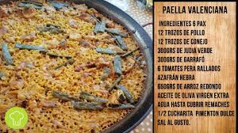
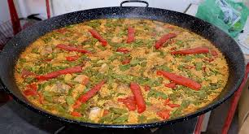
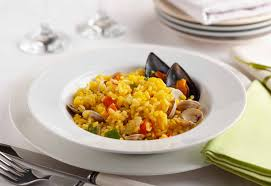

Paella valenciana
La paella valenciana es uno de los platos más representativos de la gastronomía española y una receta profundamente vinculada al territorio valenciano, a sus productos y a sus tradiciones culinarias.
Origen y tradición
La paella valenciana nació como una receta popular elaborada con ingredientes del entorno y cocinada de forma colectiva. Con el paso del tiempo, se ha convertido en uno de los platos más conocidos de la cocina española, aunque su identidad sigue estando muy ligada a Valencia y a la forma tradicional de prepararla.
El arroz es el ingrediente principal y su cocción es uno de los aspectos más importantes de la receta. La elección del caldo, la distribución del fuego y el tiempo de cocción influyen directamente en el resultado final. Por eso, la paella no solo destaca por sus ingredientes, sino también por la técnica empleada en su elaboración.
Además de su valor gastronómico, la paella tiene una dimensión social y cultural muy clara. Es habitual que se prepare para reuniones familiares, celebraciones o encuentros de fin de semana, lo que la convierte en un plato asociado a compartir la comida y mantener vivas las costumbres locales.
Galería de imágenes


